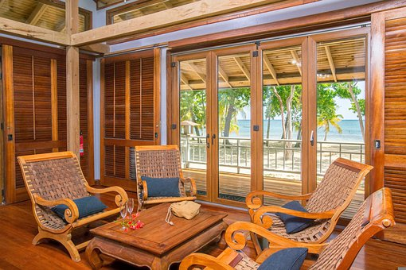
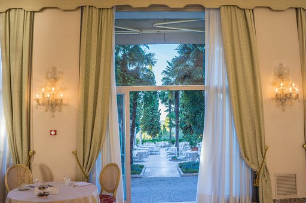
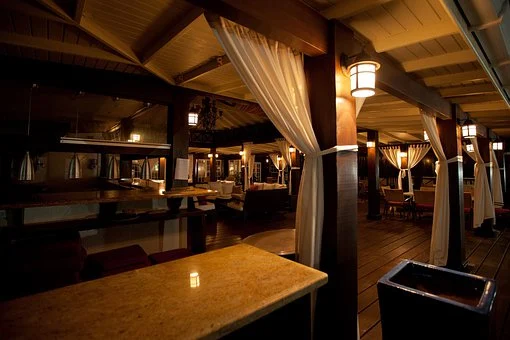

Jems
Jems



Varanasi Hotel
प्राचीन मंदिरों और ऐतिहासिक स्थलों के लिए प्रसिद्ध वाराणसी शहर, भारतीय और अंतरराष्ट्रीय पर्यटकों के बीच एक लोकप्रिय पर्यटन स्थल है. वाराणसी के पास कई धार्मिक स्थल, ट्रैकिंग स्पॉट और वन्यजीव अभयारण्य हैं, जो इस जगह की खूबसूरती को और भी ज्यादा बढ़ा देते हैं. यह शहर भगवान शिव की नगरी के नाम से मशहूर है / / /Varanasi is famous for its Banarasi silk, Muslin fabrics, perfumes, ivory works, and sculptures. It grew as an important industrial center for these items.
- Dasaswamedh Ghat
- Ganges River
- Shri Kashi Vishwanath Temple
- Banaras Hindu University